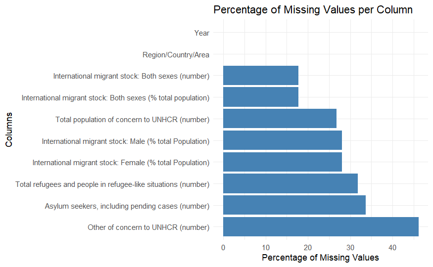
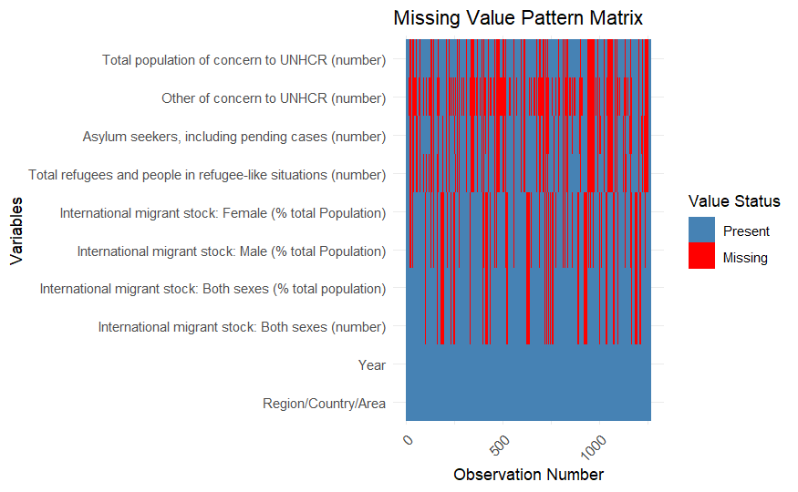

2 Data
2.1 Description
The dataset used in this analysis is sourced from UN Data, specifically focusing on migration and refugee statistics. This dataset provides a detailed view of global migration trends, including the number of international migrants, refugees, asylum seekers, and other populations of concern, categorized by region and year.
2.1.1 Key Details:
- Source: UN Data - Migration and Refugee Statistics
- Data Format: Comma-separated values (CSV).
- Size and Dimensions:
- Rows: 7,239
- Columns: 7 (
region_country_area,year,series,value, etc.)
- Variables:
region_country_area: The geographic region or country being analyzed.year: Year of data collection (e.g., 2005, 2010, 2015).series: The category of data (e.g., “Total Refugees,” “Asylum Seekers”).value: Numeric value for the given metric and year.footnotesandsource: Additional information about the data.
2.1.2 Challenges:
- Missing Values: A significant proportion of rows have missing values in key columns, such as
value. - Inconsistent Formatting: Numeric fields include commas, requiring cleaning and conversion.
- Multiple Categories per Region/Year: The
seriescolumn creates a challenge for reshaping the dataset for analysis.
The cleaned version of this dataset, prepared using R, addresses these issues by: 1. Replacing missing values with zero for numerical analysis while preserving a log of missing patterns. 2. Standardizing numeric fields by removing commas. 3. Reshaping the data to ensure categories (e.g., “Refugees,” “Asylum Seekers”) are in separate columns.
2.2 Missing Value Analysis
2.2.1 Process of Analysis
To analyze missing values in our dataset, we followed these steps: 1. Identified the variables with missing data using summary statistics and visualizations. 2. Visualized the patterns of missing data across variables and years to detect trends or anomalies. 3. Analyzed the impact of missing data on key variables such as value, which includes refugee counts and other demographic information. 4. Proposed strategies for handling missing data, such as imputation or exclusion, depending on the observed patterns.
2.2.2 Patterns Observed
Our analysis revealed the following patterns in missing data: - The variable value exhibited a significant proportion of missing data, particularly in certain categories such as Asylum Seekers. - Missing data varied by year, with older records (e.g., 2005) having more missing values compared to recent records (e.g., 2020). - Regional data was more complete for high-income countries but less so for low-income and conflict-affected regions.
2.2.3 Visualizations
2.2.4 Percentage of Missing Values per Column
This analysis identifies the proportion of missing values for each column in the dataset to understand which variables have significant data gaps.
# Load necessary libraries
library(ggplot2)
library(dplyr)
library(tidyr)
# Ensure data is loaded properly
data <- read.csv("path_to_your_cleaned_csv_file.csv")
# Calculate the percentage of missing values per column
missing_values <- data |>
summarise(across(everything(), ~ sum(is.na(.))))
pivot_longer(everything(), names_to = "Column", values_to = "Missing") |>
mutate(Percentage = (Missing / nrow(data)) * 100)
# Bar plot of missing values
ggplot(missing_values, aes(x = reorder(Column, -Percentage), y = Percentage)) +
geom_bar(stat = "identity", fill = "steelblue") +
coord_flip() +
labs(title = "Percentage of Missing Values per Column",
x = "Columns",
y = "Percentage of Missing Values") +
theme_minimal()
# Create missing value matrix
missing_matrix <- is.na(data)
as.data.frame() |>
mutate(row_id = 1:n()) |>
pivot_longer(-row_id, names_to = "Variable", values_to = "Missing")
# Create the plot
ggplot(missing_matrix, aes(x = Variable, y = row_id)) +
geom_tile(aes(fill = Missing)) +
scale_fill_manual(values = c("steelblue", "red"),
labels = c("Present", "Missing"),
name = "Value Status") +
theme_minimal() +
theme(axis.text.x = element_text(angle = 45, hjust = 1)) +
coord_flip() +
labs(x = "Variables",
y = "Observation Number",
title = "Missing Value Pattern Matrix")2.2.5 Commentary: Graph 2 - population vise missing value.
The bar chart shows the proportion of missing values in each column. The Other of concern to UNHCR (number) column has the highest missing percentage (~45%), followed by Asylum seekers, including pending cases (number) and Total refugees and people in refugee-like situations (number). Core variables such as Year and Region/Country/Area exhibit no missing values, ensuring consistent contextual data. The variability in missing values suggests potential issues in data collection across regions and categories, necessitating targeted imputation or exclusion strategies.

2.2.6 Commentary: Graph 2 - Matrix Represention for missing value pattern
The matrix visualization reveals that missing values (red) occur systematically in some columns, notably Other of concern to UNHCR (number) and Asylum seekers, including pending cases (number). Variables such as Region/Country/Area and Year remain complete (blue), providing reliable context for analysis. The clustering of missing values across observations indicates potential issues with data collection in specific time periods or regions.
2.2.7 Conclusion
The examination of missing data reveals an uneven distribution across variables, years, and regions. To maintain the reliability of our findings:
- Missing values in key variables (e.g., value) will be addressed using suitable techniques such as mean or mode imputation.
- Variables or years with substantial missing data may be excluded from the analysis to minimize the risk of bias.